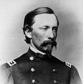
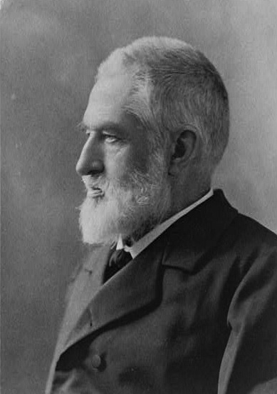

|
Cartography is the art of making maps and charts. Throughout
the first part of the 19th century, the United States
government spent a great deal of time and money on
expeditions to map the land that the country had acquired,
especially the vast Louisiana Purchase. Meanwhile, the older
and more heavily settled areas of the country received very
little attention from government cartographers. These areas
eventually became the battlegrounds for much of the Civil
|

Col. William E. Merrill
|
War, and so the oversight created a major logistical problem
for commanders on both sides, and necessitated the creation
of thousands of new maps.
The Union was vastly better prepared to make the maps
that were needed. The Union began with several experienced
mapmaking units already in place, including the U.S. Coastal
Survey and the Navy's Hydrographic Office. The most
important was the Union army's Engineering Corps, which
included a group of specialists in cartography known as the
Topographical Bureau. The Bureau had been created in 1816,
and by the Civil War had grown to 45 men under the command
of Colonel William E. Merrill. Only seven of the 45
cartographers resigned their commissions to join the
Confederacy when the war broke out, and only two of the
seven were senior members of the Bureau. In addition to
retaining the majority of the nation's experienced military
cartographers, the Union also had better technology for
duplicating maps. The North's prosperity allowed for the
purchase of lithographic presses, which had only been
recently developed. Although very heavy, these presses could
travel with an army, and they allowed for high-quality
reproductions of maps to be made at a rapid pace.
The only real advantage that the Confederacy enjoyed in
the creation of maps was that the war was largely fought in
their home territory. This made it easier to make correct
maps, since local residents of an area that was being mapped
could generally be counted on for assistance. Whatever
benefits could be derived from this, however, were largely
negated by the obstacles that the Confederacy faced when in
came to mapmaking. For the first year of the war, the
Confederacy had no entity responsible for coordinating
mapmaking operations. Not until Robert E. Lee took command
of the Army of Northern Virginia in June of 1862 was a
topographical department established, under the command of
Captain Albert H. Campbell.
Campbell's staff was small, and the materials needed for
mapmaking were in short supply in the South, so it was
impossible for the Confederate mapmakers to produce anywhere
near as many maps as their Union counterparts. Even the
Confederate capital of Richmond was not completely mapped
until early 1863, when the war was nearly half over.
Campbell also did not have modern technology for duplicating
maps, and so the maps given to Confederate field commanders
tended to be much more crude than the maps given the Union
field commanders.
Despite the Union's advantages over the Confederacy, the
first months of the war were largely fought without good
maps on either side. During the Peninsular campaign of 1862,
for example, leaders on both sides of the conflict were
hampered by their poor understanding of local geography.
Confederate general Richard Taylor wrote that, "Confederate
Commanders knew no more about the topography of the country
than they did about Central Africa." Union General George
McClellan concurred, noting that "good maps were not to be
found." As the war progressed, however, such complaints were
less frequent. Indeed, Northern mapmakers in particular
became an industry unto themselves. In 1864, the final full
year of the war, the Union's various mapmaking bureaucracies
|

Maj. Jedediah Hotchkiss
|
produced 43,000 maps and 44,000 nautical charts. By the end
of the year, virtually the entire Confederacy had been
mapped.
Confederate mapmakers could not approach the level of
production achieved by their Union counterparts, although
they did have some notable successes. The Confederacy's
finest mapmaker was Jedediah Hotchkiss, a self-taught
cartographer who was on the staff of General Thomas J.
"Stonewall" Jackson. Shortly after joining the Confederate
army in March of 1862, Hotchkiss was instructed to make the
maps needed for Jackson's Shenandoah Valley campaign. He
responded by producing what are arguably the finest maps
created by any cartographer on either side of the war.
Jackson went on to defeat a numerically superior Union
force, and undoubtedly Hotchkiss' maps played an important
role in the victory.
Of course, the Union's cartographers had a few successes
of their own. Perhaps the most significant occurred in 1864,
when a group of mapmakers were ordered to help make the
preparations for Sherman's march through Georgia. Under the
direct supervision of Colonel Merrill, they completed their
"Map of Northern Georgia" on May 2, 1864. The map's level of
accuracy was an achievement, given that it was created by
men working in enemy territory. And even when it wasn't
accurate, the map allowed for Union commanders to properly
coordinate their actions, since they were all working off of
the same map.
Cartographers on both sides, then, played an important
role as the Civil War unfolded. By the middle of 1862,
mapmakers were providing invaluable intelligence, often at a
dizzying pace. Despite their valuable service, however, they
received little credit during or after the war. They
continue to remain largely obscure; their maps are not often
reproduced, a mention of their work is rarely incorporated
into discussions of strategy or tactics.
Source: Joan Waugh, ed., Facts on File Encyclopedia of American
History: Civil War and Reconstruction, 1856 to 1869 (New York: Facts on
File, 2003), 51-52.
|